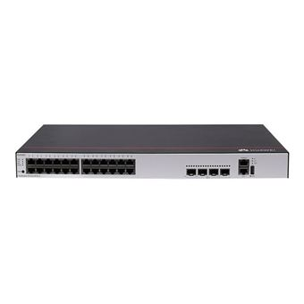

Projet technique de maintenance et de fiabilisation reseau.

Mise a jour firmware des switchs Huawei
Operation de maintenance preventive realisee pour fiabiliser le reseau, corriger les anomalies et homogeniser les versions des equipements.
Contexte
Ce projet avait pour objectif de maintenir des equipements reseau dans un etat stable et coherent. La mise a jour des switchs Huawei devait reduire les risques lies aux versions obsoletes et limiter les anomalies en production.
A preciser selon la duree reelle du projet.
Budget faible, operation realisee avec equipements et fichiers existants.
A preciser.
A preciser.
Travail realise
- Preparation d'un serveur FTP avec les firmwares valides.
- Verification des versions deja presentes sur les equipements.
- Sauvegarde de la configuration avant intervention.
- Transfert des images vers les switchs Huawei.
- Redemarrage controle apres mise a jour.
- Tests de connectivite, VLAN, uplinks et supervision.
Difficultes et points d'attention
- Bien preparer l'operation pour eviter tout impact important sur la disponibilite du reseau.
- Verifier la compatibilite de la version firmware avec le materiel concerne.
- Conserver une sauvegarde exploitable pour securiser l'intervention.
Schemas et captures a ajouter

Competences BTS SIO SISR mobilisees
- Maintenir en conditions operationnelles des equipements reseau.
- Preparer, executer et verifier une operation technique sur infrastructure.
- Participer a la fiabilisation et a la securisation du systeme d'information.